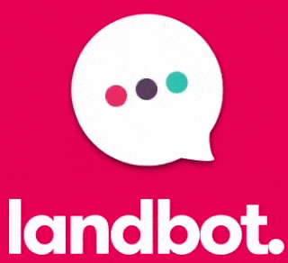
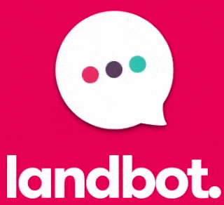
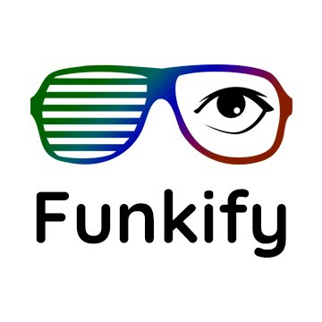
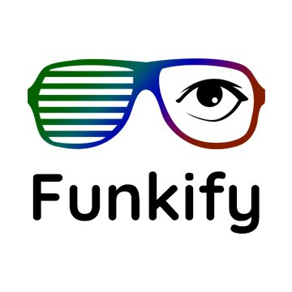
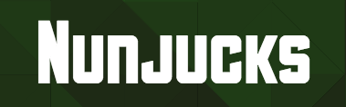
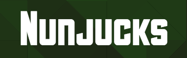
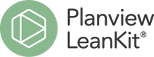
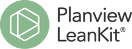

I've had many roles so far: teacher, tester, customer support representative, web designer, and software developer. I was doing UX Design in all of them before I even knew what UX Design was.
Strong points
I'm extremely organised, have a 'get done' attitude, love problem solving and learn fast.
Software Developer
A lot of developers are perfectly happy to code without being involved in the design or content discussion. This is not me.
Customer Support for video games
I worked on Information Architecture and content while building a knowledge base for my colleagues. Gathered needs and existing information, structured it so it could be maintained efficiently, and eventually empowered both the users to resolve their issues and my colleagues to maintain our knowledge base.
More about working in video games support.
Teacher
I've taught children and adults in French classes in Scotland and in Paris.
By creating my own teaching materials based on my users, ages, abilities and culture, I had to discover their specific needs, test and improve my material so they could learn effectively.
Web Designer
I've been part of various local groups (community council, allotments, parents council, book festival) and created WordPress websites for them to communicate to wider audiences.

Blog and Medium stories
You can read my posts on Medium or on my blog.
I write about:
- training - professional developement
- conference write up
- ressources - raising awareness
Conferences and other events I'm going to
In 2019, I went to:
- the CivTech Demo Day 3.0
- Service Design in Government Conference
- UX Scotland Conference
- Design 21st century government - FutureGov event
- Accessibility Scotland Conference
- BIMA Digital day to talk about digital professions to academy pupils
- World Usability Day event organised by User Vision
Tools I use as a Designer


 

Tools I use to test Accessibility


 

Tools I use as Developer


 

Tools and frameworks used to organise my work


 
